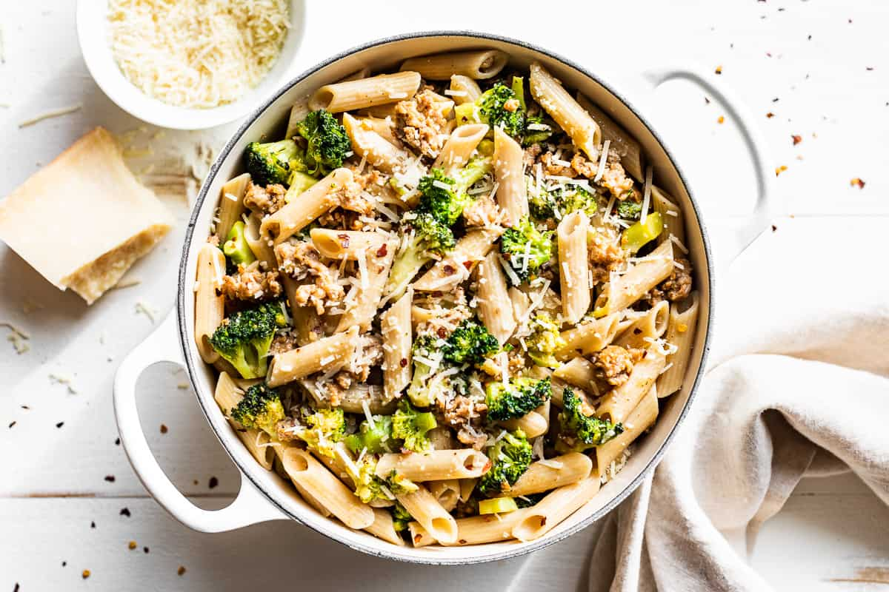

Penne and Broccoli with Sausage
Back to Recipe Listing

Description
Penne and Broccoli with Sausage is a comforting and flavorful pasta dish that's simple
to make and packed with delicious ingredients. The savory sausage pairs wonderfully with
tender broccoli and penne, all brought together with a light garlic and olive oil sauce.
Here's a recipe for you to try.
Ingredients
- 1 package penne pasta (454g)
- 1 pound hot Italian sausage links
- 3 cloves garlic, minced
- 1 head of broccoli, cut into 1 1/2-inch lengths
- 1/2 cup olive oil
- 2 tablespoons grated Parmesan cheese
- salt and pepper to taste
Steps
- Bring a large pot of water to a boil.
While waiting for the water to boil:
- clean & cut broccoli into 1 1/2 inch pieces
- cut (mince) gloves of garlic into little pieces and put to the side
- When the water comes to a boil, cook broccoli for approximately 6 minutes,
drain, then put to the side.
- Bring the same large pot of water to a boil again and cook the penne between
10 and 15 minutes (refer to package instructions).
- While waiting for the water to boil or for the penne to cook, in a pan, on medium
high heat, add 1 tablespoon of olive oil then cook the italian sausage for
5 minutes.
- While sausage is cooking, cut sausage into 1/2 inch pieces and cook for another
5-10 minutes.
- Once the penne is ready, drain it and put to the side.
- Put the same pot, used for cooking both the broccoli and penne, on medium high heat
and add a 1/2 cup of olive oil along with the minced garlic and cooked italian
sausage.
- Now, add the cooked broccoli, then, the pasta to the pot, parmesan, with salt and pepper,
and stir for a few minutes.
- Lower the heat to minimum (low) and let sit for 5-10 minutes.
It is now ready to serve. Please note that added pepper and parmesan are great additions to the meal.